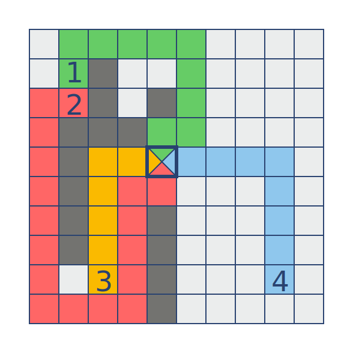

Supply Stations¶
We need to supply our new factory with four various resources from four different stations. For simplicity we will name them 1st, 2nd, 3rd and 4th resources (we can leave the rest up to your imagination). For this we will need to calculate four routes from the supply stations to the factory. Trucks will must deliver our supplies without stopping and we can not build several layers roads. So the truck routes should not intersect.
You are given a rectangular map divided by square cells. The map is represented as a sequence of strings, where: - ”.” is a clear cell; - “X” is an obstacle (forest, lake, etc); - “1”, “2”, “3” or “4” are supply stations; - “F” is a factory.
You are given a rectangular map divided by square cells. The map is represented as a sequence of strings, where: - “N” north (up); - “S” south (down); - “E” east (right); - “W” west (left); A route will be represented as a string with these letters. The result should be as a sequence (list or tuple) of four routes from 1st to 4th.
For the given example (image) the result will be described as:
["NEEEESSSWS",
"WSSSSSSSEEENNNNEN,
"NNNNEE",
"NNNNWWWW"]
Input: The map as a tuple of strings.
Output: The routes as a tuple/list of strings.
Example:
supply_routes(("..........",
".1X.......",
".2X.X.....",
".XXX......",
".X..F.....",
".X........",
".X..X.....",
".X..X.....",
"..3.X...4.",
"....X....."))
Precondition:
All test cases are solvable.5 ≤ len(the_map) ≤ 10all(5 ≤ len(row) ≤ 10 for row in the_map)
Solution:
from itertools import permutations
def get_neighbor(p, llim, wlim):
plist = [(p[0]-1, p[1]), (p[0]+1, p[1]), (p[0], p[1]-1), (p[0], p[1]+1)]
return [(i,j) for i,j in plist if 0<=i<llim and 0<=j<wlim]
def h(p, target):
return abs(p[0]-target[0]) + abs(p[1]-target[1])
def access(start, end, maplist):
llim, wlim = len(maplist), len(maplist[0])
visited, to_search = set([]), {start,}
while to_search:
temp = set([])
for p in to_search:
nlist = get_neighbor(p, llim, wlim)
nlist = set([p for p in nlist if maplist[p[0]][p[1]] != 'X'])
temp |= nlist - visited
visited |= to_search
to_search = temp
return end in visited
def find_path(start, end, maplist, check=None, target=None):
llim, wlim = len(maplist), len(maplist[0])
OPEN, CLOSE = {}, {start: (0, h(start, end), None)}
plist = [(i,j) for i,j in get_neighbor(start, llim, wlim) if maplist[i][j]=='.']
for p in plist:
OPEN[p] = (1, h(p, end), start)
while OPEN and (end not in CLOSE):
now = min(OPEN.keys(), key=lambda x: OPEN[x][0] + OPEN[x][1])
CLOSE[now] = OPEN[now]
del OPEN[now]
plist = [(i,j) for i,j in get_neighbor(now, llim, wlim) \
if maplist[i][j]=='.' and (i,j) not in CLOSE]
if check: maplist[now[0]][now[1]] = 'X'
for p in plist:
if check:
new_map = [r[:] for r in maplist]
new_map[p[0]][p[1]] = 'X'
if not all(access(s, target, new_map) for s in check): continue
if (p not in OPEN) or (CLOSE[now][0] + h(p, end) + 1 < OPEN[p][0] + OPEN[p][1]):
OPEN[p] = (CLOSE[now][0] + 1, h(p, end), now)
if end not in CLOSE: return None
path = [end]
while start not in path:
path = [CLOSE[path[0]][2]] + path
return path
def path2dir(path):
DIRECTION = {(-1,0):'N', (1,0):'S', (0,-1):'W', (0,1):'E'}
d = ''
for i,p in enumerate(path[1:]):
q = path[i]
d += DIRECTION[(p[0]-q[0], p[1]-q[1])]
return d
def supply_routes(the_map):
llim, wlim = len(the_map), len(the_map[0])
locdict = {}
for i in range(llim):
for j in range(wlim):
if the_map[i][j] in '1234':
locdict[int(the_map[i][j]) - 1] = (i, j)
elif the_map[i][j]=='F':
F = (i, j)
# naive search, fast but may find nothing
for ports in permutations(get_neighbor(F, llim, wlim)):
for sources in permutations((0, 1, 2, 3)):
new_map, pathlist = [list(r) for r in the_map], [0]*4
for n,s in enumerate(sources):
path = find_path(locdict[s], ports[n], new_map)
if path is None: break
pathlist[s] = path
for i,j in path:
new_map[i][j] = 'X'
if all(pathlist):
return [path2dir(path+[F]) for path in pathlist]
# sophisticated search, slow but more careful
for ports in permutations(get_neighbor(F, llim, wlim)):
for sources in permutations((0, 1, 2, 3)):
new_map, pathlist = [list(r) for r in the_map], [0]*4
for n,s in enumerate(sources):
check = [locdict[t] for t in sources[n+1:]]
path = find_path(locdict[s], ports[n], new_map, check, F)
if path is None: break
pathlist[s] = path
for i,j in path:
new_map[i][j] = 'X'
if all(pathlist):
return [path2dir(path+[F]) for path in pathlist]